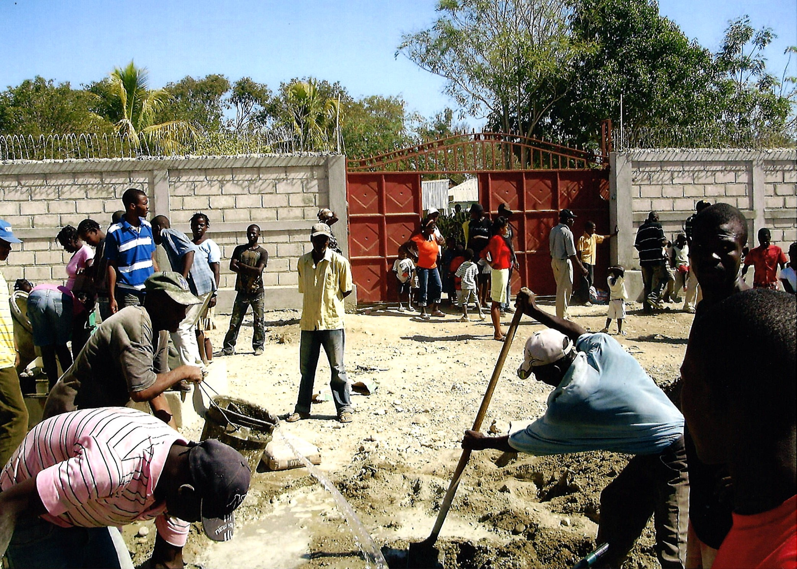

Why Thomassique, Haiti?

- Haiti is a country of extreme poverty.
- There is a lack of schools for children in small towns or rural areas.
- There are over 300,000 child slaves in Haiti.
- Many girls are forced into a life of prostitution to survive.
- Less than 50% of the population is literate.
- More than two-thirds of the labor force does not have formal jobs.
- There is an extreme lack of potable water and sewer systems.